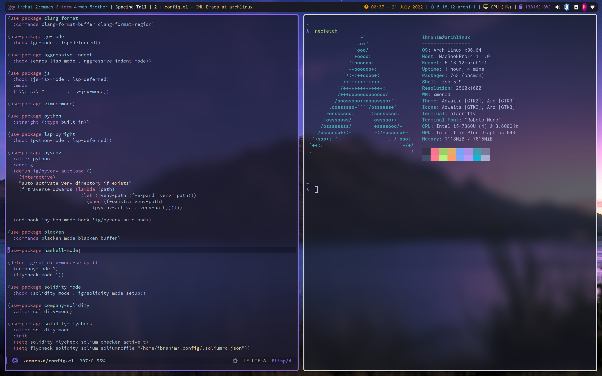

My personal dotfiles
Table of Contents
Screenshot

Alacritty
font: normal: family: "Roboto Mono" size: 10 window: dimensions: columns: 0 lines: 0 padding: x: 6 y: 0 dynamic_padding: false decorations: none opacity: 0.700 mouse: hide_when_typing: true schemes: # Tokyo Night theme, based on both: # https://github.com/ghifarit53/tokyonight-vim # https://github.com/enkia/tokyo-night-vscode-theme tokyo-night: &tokyo-night # Default colors primary: background: '0x1a1b26' foreground: '0xa9b1d6' # Normal colors normal: black: '0x32344a' red: '0xf7768e' green: '0x9ece6a' yellow: '0xe0af68' blue: '0x7aa2f7' magenta: '0xad8ee6' cyan: '0x449dab' white: '0x787c99' # Bright colors bright: black: '0x444b6a' red: '0xff7a93' green: '0xb9f27c' yellow: '0xff9e64' blue: '0x7da6ff' magenta: '0xbb9af7' cyan: '0x0db9d7' white: '0xacb0d0' tokyo-night-storm: &tokyo-night-storm # Default colors primary: background: '0x24283b' foreground: '0xa9b1d6' # Normal colors normal: black: '0x32344a' red: '0xf7768e' green: '0x9ece6a' yellow: '0xe0af68' blue: '0x7aa2f7' magenta: '0xad8ee6' cyan: '0x449dab' white: '0x9699a8' # Bright colors bright: black: '0x444b6a' red: '0xff7a93' green: '0xb9f27c' yellow: '0xff9e64' blue: '0x7da6ff' magenta: '0xbb9af7' cyan: '0x0db9d7' white: '0xacb0d0' colors: *tokyo-night
Bash
# # ~/.bashrc # # If not running interactively, don't do anything [[ $- != *i* ]] && return alias ls='ls --color=auto' PS1='[\u@\h \W]\$ ' alias config='/usr/bin/git --git-dir=/home/ibrahim/.cfg/ --work-tree=/home/ibrahim'
Emacs
Gtk
[Settings] gtk-key-theme-name = Emacs gtk-theme-name = Arc gtk-icon-theme-name = Arc
Starship
[character] success_symbol = "[λ](bold #9567e0) " error_symbol = "[λ](bold red) "
Tmux
# start with mouse mode enabled set -g mouse on # Change prefix to C-t unbind C-b unbind C-b set -g prefix C-t bind r source-file ~/.tmux.conf set -g @plugin 'wfxr/tmux-power' set -g @tmux_power_theme 'violet' # Initialize TMUX plugin manager (keep this line at the very bottom of tmux.conf) run '~/.tmux/plugins/tpm/tpm'
Tridactyl
sanitise tridactyllocal tridactylsync colors midnight set smoothscroll true set modeindicatorshowkeys true set tabopencontaineraware true set allowautofocus false set newtab https://web.tabliss.io/ set searchengine duckduckgo unbind <F1> bind K tabprev bind J tabnext bind + zoom 0.1 true bind - zoom -0.1 true command ttcollapse js -d€ browser.runtime.sendMessage("treestyletab@piro.sakura.ne.jp", {type: 'collapse-tree', tab: JS_ARGS[1]})€ command ttcollapse_recursively js -d€ browser.runtime.sendMessage("treestyletab@piro.sakura.ne.jp", {type: 'collapse-tree', tab: JS_ARGS[1], recursively: true})€ command ttexpand js -d€ browser.runtime.sendMessage("treestyletab@piro.sakura.ne.jp", {type: 'expand-tree', tab: JS_ARGS[1]})€ command ttexpand_recursively js -d€ browser.runtime.sendMessage("treestyletab@piro.sakura.ne.jp", {type: 'expand-tree', tab: JS_ARGS[1], recursively: true})€ command ttcollapse_current_or_parent js browser.runtime.sendMessage("treestyletab@piro.sakura.ne.jp", {type: 'get-tree-structure', tab: 'current'}).then(struct => browser.runtime.sendMessage("treestyletab@piro.sakura.ne.jp", {type: 'collapse-tree', tab: struct[0].collapsed ? 'parent' : 'current'})) command ttfocus js -d€ browser.runtime.sendMessage("treestyletab@piro.sakura.ne.jp", {type: 'focus', tab: JS_ARGS[1]})€ command ttindent js -d€ browser.runtime.sendMessage("treestyletab@piro.sakura.ne.jp", {type: 'indent', tab: JS_ARGS[1]})€ command ttindent_recursively js -d€ browser.runtime.sendMessage("treestyletab@piro.sakura.ne.jp", {type: 'indent', tab: JS_ARGS[1], followChildren: true})€ command ttoutdent js -d€ browser.runtime.sendMessage("treestyletab@piro.sakura.ne.jp", {type: 'outdent', tab: JS_ARGS[1]})€ command ttoutdent_recursively js -d€ browser.runtime.sendMessage("treestyletab@piro.sakura.ne.jp", {type: 'outdent', tab: JS_ARGS[1], followChildren: true})€ " Collapse/expand current tree bind zc ttcollapse_current_or_parent bind zC ttcollapse_recursively root bind zo ttexpand current bind zO ttexpand_recursively current " Collapse/expand all bind zm ttcollapse * bind zr ttexpand * " Focus parent/root of a tree bind zp ttfocus parent bind zP ttfocus root " Focus next/previous, skipping over subtrees. May also try nextSiblingCyclic/prevSiblingCyclic: bind zj ttfocus nextSibling bind zk ttfocus prevSibling " Indent/outindent current tab bind << ttoutdent_recursively current bind >> ttindent_recursively current
Volumeicon
[Alsa] card=default [Notification] show_notification=true notification_type=0 [StatusIcon] stepsize=5 onclick=xterm -e 'alsamixer' theme=White Gnome use_panel_specific_icons=false lmb_slider=false mmb_mute=false use_horizontal_slider=false show_sound_level=false use_transparent_background=false [Hotkeys] up_enabled=false down_enabled=false mute_enabled=false up=XF86AudioRaiseVolume down=XF86AudioLowerVolume mute=XF86AudioMute
Xmobar
Config { font = "xft:Roboto Mono:pixelsize=19:antialias=true:hinting=true" , additionalFonts = [ "xft:Font Awesome 6 Free Solid:pixelsize=18" , "xft:Font Awesome 6 Brands:pixelsize=18" ] , bgColor = "#1a1b26" , fgColor = "#eff0eb" , alpha = 255 , position = Static { xpos = 20 , ypos = 10, width = 2520, height = 40 } -- , position = TopSize C 100 40 , textOffset = -1 , iconOffset = -1 , lowerOnStart = True , pickBroadest = False , persistent = False , hideOnStart = False , iconRoot = "/home/ibrahim/.xmonad/xpm/" -- default: "." , allDesktops = True , overrideRedirect = True , commands = [ Run Cpu ["-t", "<fn=1>\xf108</fn> CPU:(<total>%)","-H","50","--high","red"] 20 , Run Memory ["-t", "<fn=1>\xf7c2</fn> <used>M(<usedratio>%)"] 20 , Run Date "<fn=1>\xf017</fn> %H:%M - %d %B %Y" "date" 50 , Run Com "echo" ["<fn=2>\xf17c</fn>"] "penguin" 3600 , Run Com "uname" ["-r"] "kernel" 36000 , Run Com "echo" ["<fn=1>\xf242</fn>"] "baticon" 3600 , Run Com ".config/xmobar/trayer-padding-icon.sh" [] "trayerpad" 20 , Run UnsafeStdinReader ] , sepChar = "%" , alignSep = "}{" , template = " <icon=haskell_30.xpm/> %UnsafeStdinReader% }\ \{ <fc=#ee9a00>%date%</fc> | <fc=#51afef>%penguin% <action=`alacritty -e htop`>%kernel%</action></fc> | <fc=#ecbe7b><action=`alacritty -e htop`>%cpu%</action></fc> | <fc=#9567e0><action=`alacritty -e htop`>%memory%</action></fc> %trayerpad%" }
Xmodmap
clear lock clear control keycode 66 = Control_L add control = Control_L add Lock = Control_R
Xmonad
Imports
import XMonad import Data.Maybe (isJust) import Data.Monoid import System.Exit import XMonad.Actions.CycleWS (Direction1D(..), moveTo, shiftTo, WSType(..), nextScreen, prevScreen) import XMonad.Actions.WithAll (sinkAll, killAll) import XMonad.Hooks.ManageDocks import XMonad.Hooks.DynamicLog (dynamicLogWithPP, wrap, xmobarPP, xmobarColor, shorten, PP(..)) import XMonad.Layout.Spacing import XMonad.Layout.ThreeColumns import XMonad.Layout.MultiToggle (mkToggle, single, EOT(EOT), (??)) import XMonad.Layout.MultiToggle.Instances (StdTransformers(NBFULL, MIRROR, NOBORDERS)) import XMonad.Util.SpawnOnce import XMonad.Util.Run import XMonad.Util.EZConfig (additionalKeysP) import Graphics.X11.ExtraTypes.XF86 import qualified XMonad.StackSet as W import qualified Data.Map as M import qualified XMonad.Layout.MultiToggle as MT (Toggle(..))
Variables
myTerminal = "alacritty" myEmacs :: String myEmacs = "emacsclient -c -a 'emacs' " -- Makes emacs keybindings easier to type myBrowser :: String myBrowser = "firefox" -- Whether focus follows the mouse pointer. myFocusFollowsMouse :: Bool myFocusFollowsMouse = True -- Whether clicking on a window to focus also passes the click to the window myClickJustFocuses :: Bool myClickJustFocuses = False color01 = "#9567e0" color02 = "#51afef" color03 = "#ecbe7b" windowCount :: X (Maybe String) windowCount = gets $ Just . show . length . W.integrate' . W.stack . W.workspace . W.current . windowset myBorderWidth = 4 myModMask = mod4Mask myWorkspaces = ["1:chat","2:emacs","3:term","4:web","5:other"] myNormalBorderColor = "#dddddd" myFocusedBorderColor = "#9567e0" menuBackgroundColor = "#282a36" menuForegroundColor = "#eff0eb" menuFontFamily = "Iosevka Aile" menuArguments = " -l 5 -fn '" ++ menuFontFamily ++ "' -nb '" ++ menuBackgroundColor ++ "' -nf '" ++ menuForegroundColor ++ "' -bw 4"
Key Bindings
myKeys :: [(String, X ())] myKeys = -- launch a terminal [ ("M-<Return>", spawn (myTerminal)) -- launch dmenu , ("M-p", spawn ("dmenu_run" ++ menuArguments)) -- launch clipmenu , ("M-u", spawn ("clipmenu" ++ menuArguments)) -- launch passmenu , ("M-i", spawn ("passmenu" ++ menuArguments)) -- close focused window , ("M-c", kill) , ("M-S-c", killAll) , ("M-S-q", io (exitWith ExitSuccess)) , ("M-q", spawn "xmonad --recompile; xmonad --restart") -- Emacs keybindings , ("M-<Backspace>", spawn (myEmacs)) , ("M-S-<Backspace> b", spawn (myEmacs ++ ("--eval '(ibuffer)'"))) , ("M-S-<Backspace> d", spawn (myEmacs ++ ("--eval '(dired nil)'"))) , ("M-S-<Backspace> e", spawn (myEmacs ++ ("--eval '(ig/open-emacs-configuration)'"))) , ("M-S-<Backspace> a", spawn (myEmacs ++ ("--eval '(ig/open-dotfiles-configuration)'"))) -- launch browser , ("M-b", spawn (myBrowser)) -- Rotate through the available layout algorithms , ("M-<Space>", sendMessage NextLayout) , ("M-<Tab>", sendMessage (MT.Toggle NBFULL) >> sendMessage ToggleStruts >> toggleSmartSpacing) -- Window navigation , ("M-m", windows W.focusMaster) , ("M-j", windows W.focusDown) , ("M-k", windows W.focusUp) , ("M-S-m", windows W.swapMaster) , ("M-S-j", windows W.swapDown) , ("M-S-k", windows W.swapUp) -- Floating windows , ("M-t", withFocused $ windows . W.sink) , ("M-S-t", sinkAll) -- Window resizing , ("M-h", sendMessage Shrink) , ("M-l", sendMessage Expand) -- KB_GROUP Workspaces , ("M-.", nextScreen) , ("M-,", prevScreen) , ("M-S-.", shiftTo Next nonNSP >> moveTo Next nonNSP) , ("M-S-,", shiftTo Prev nonNSP >> moveTo Prev nonNSP) -- control audio , ("<XF86AudioLowerVolume>", spawn "pactl set-sink-volume 0 -1.5%") , ("<XF86AudioRaiseVolume>", spawn "pactl set-sink-volume 0 +1.5%") , ("<XF86AudioMute>", spawn "pactl set-sink-mute 0 toggle") -- control brightness , ("<XF86MonBrightnessUp>", spawn "sudo xbacklight -inc 10") , ("<XF86MonBrightnessDown>", spawn "sudo xbacklight -dec 10") ] -- The following lines are needed for named scratchpads. where nonNSP = WSIs (return (\ws -> W.tag ws /= "NSP")) nonEmptyNonNSP = WSIs (return (\ws -> isJust (W.stack ws) && W.tag ws /= "NSP"))
Mouse Bindings
-- Mouse bindings myMouseBindings (XConfig {XMonad.modMask = modm}) = M.fromList $ -- mod-button1, Set the window to floating mode and move by dragging [ ((modm, button1), (\w -> focus w >> mouseMoveWindow w >> windows W.shiftMaster)) -- mod-button2, Raise the window to the top of the stack , ((modm, button2), (\w -> focus w >> windows W.shiftMaster)) -- mod-button3, Set the window to floating mode and resize by dragging , ((modm, button3), (\w -> focus w >> mouseResizeWindow w >> windows W.shiftMaster)) -- you may also bind events to the mouse scroll wheel (button4 and button5) ]
Layout
myLayout = avoidStruts $ mkToggle (NBFULL ?? NOBORDERS ?? EOT) myDefaultLayout where myDefaultLayout = (tiled ||| Mirror tiled ||| threeCol ||| Full) where threeCol = ThreeColMid nmaster delta ratio -- default tiling algorithm partitions the screen into two panes tiled = Tall nmaster delta ratio -- The default number of windows in the master pane nmaster = 1 -- Default proportion of screen occupied by master pane ratio = 1/2 -- Percent of screen to increment by when resizing panes delta = 3/100
Hooks
------------------------------------------------------------------------ -- Window rules: myManageHook = composeAll [ className =? "MPlayer" --> doFloat , className =? "Gimp" --> doFloat , className =? "Emacs" --> doShift "2:emacs" , className =? "Alacritty" --> doShift "3:term" , className =? "firefox" --> doShift "4:web" , resource =? "desktop_window" --> doIgnore , resource =? "kdesktop" --> doIgnore ] ------------------------------------------------------------------------ -- Event handling -- * EwmhDesktops users should change this to ewmhDesktopsEventHook -- -- Defines a custom handler function for X Events. The function should -- return (All True) if the default handler is to be run afterwards. To -- combine event hooks use mappend or mconcat from Data.Monoid. -- myEventHook = mempty ------------------------------------------------------------------------ -- Status bars and logging -- Perform an arbitrary action on each internal state change or X event. -- See the 'XMonad.Hooks.DynamicLog' extension for examples. -- myLogHook xmproc = dynamicLogWithPP $ xmobarPP { ppOutput = \x -> hPutStrLn xmproc x , ppCurrent = xmobarColor color01 "" . wrap ("<fc=" ++ color01 ++ ">") "</fc>" , ppVisible = xmobarColor color01 "" , ppHidden = xmobarColor color02 "" . wrap ("<fc=" ++ color02 ++ ">") "</fc>" , ppHiddenNoWindows = xmobarColor color02 "" , ppTitle = xmobarColor color03 "" . shorten 50 , ppSep = " | " , ppExtras = [windowCount] , ppOrder = \(ws:l:t:ex) -> [ws,l]++ex++[t] } ------------------------------------------------------------------------ -- Startup hook myStartupHook = do spawn "killall trayer" spawnOnce "nitrogen --restore" spawnOnce "picom --config $HOME/.config/picom/picom.conf" spawnOnce "/usr/bin/emacs --daemon" -- emacs daemon for the emacsclient spawnOnce "clipmenud" spawnOnce "cbatticon" spawnOnce "nm-applet" spawnOnce "blueman-applet" spawnOnce "volumeicon" spawnOnce "flameshot" spawn ("trayer --distance 10 --margin 18 --edge top --align right --widthtype request --padding 5 --SetDockType true --SetPartialStrut true --expand true --monitor 0 --iconspacing 8 --transparent true --alpha 0 --tint 0x1a1b26 --height 40")
Main
-- Run xmonad with the settings you specify. No need to modify this. -- main = do xmproc <- spawnPipe "xmobar -x 0" xmonad $docks $ defaults xmproc -- A structure containing your configuration settings, overriding -- fields in the default config. Any you don't override, will -- use the defaults defined in xmonad/XMonad/Config.hs -- -- No need to modify this. -- defaults xmproc = def { -- simple stuff terminal = myTerminal, focusFollowsMouse = myFocusFollowsMouse, clickJustFocuses = myClickJustFocuses, borderWidth = myBorderWidth, modMask = myModMask, workspaces = myWorkspaces, normalBorderColor = myNormalBorderColor, focusedBorderColor = myFocusedBorderColor, -- key bindings -- keys = myKeys, mouseBindings = myMouseBindings, -- hooks, layouts layoutHook = spacingRaw False (Border 10 10 10 10) True (Border 10 10 10 10) True $ myLayout, manageHook = myManageHook, handleEventHook = myEventHook, logHook = myLogHook xmproc, startupHook = myStartupHook } `additionalKeysP` myKeys
Xprofile
xset r rate 400 50 setxkbmap -option altwin:swap_alt_win xmodmap ~/.Xmodmap
Xresources
Xft.dpi: 144 ! These might also be useful depending on your monitor and personal preference: Xft.autohint: 0 Xft.lcdfilter: lcddefault Xft.hintstyle: hintfull Xft.hinting: 1 Xft.antialias: 1 Xft.rgba: rgb dmenu.selbackground: #9567e0 Emacs.font: Roboto Mono-100
Zsh
export ZSH="$HOME/.oh-my-zsh" plugins=( git zsh-syntax-highlighting zsh-autosuggestions colored-man-pages ) source $ZSH/oh-my-zsh.sh export EDITOR='emacs' alias config='/usr/bin/git --git-dir=/home/ibrahim/.cfg/ --work-tree=/home/ibrahim' alias ls='exa' eval "$(starship init zsh)"